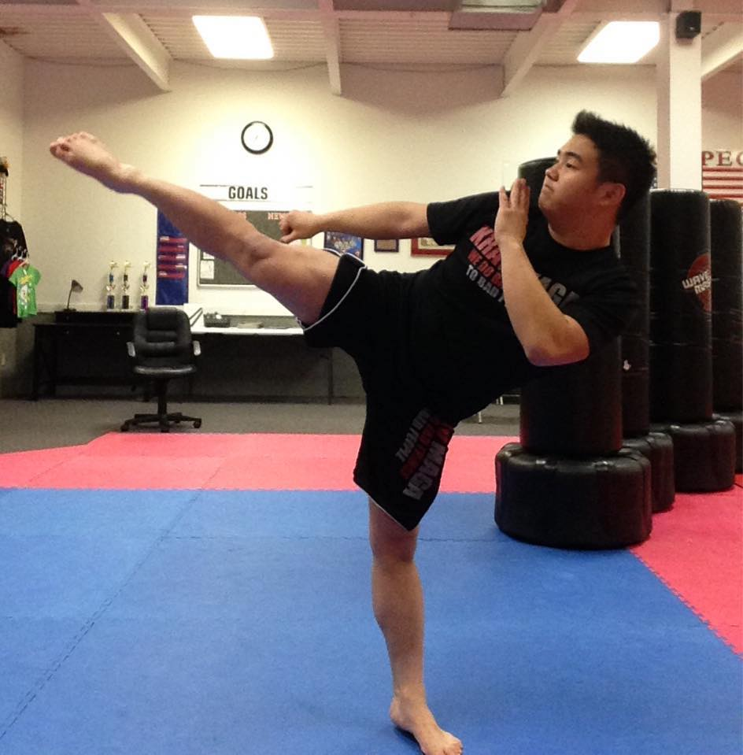

My Interests

In terms of interests, my main hobby is practicing martial arts. I am actually a 3rd degree black-belt in taekwondo and I also instruct people of all ages. I've been doing this whole thing for about seven years now and I have now stopped since. Not only have I done martial arts, but I have also played football in high school. However, I dont play in college, but that does not keep me from the enjoymeny of watching the New England Patriots play.